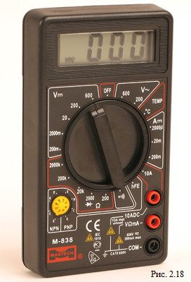

1.2.7. Электроизмерения
Электрические измерения – измерения электрических величин: силы тока, электрического напряжения, электрического сопротивления, частоты и фазы переменного тока, мощности тока, электрической энергии, электрического заряда, индуктивности, электрической ёмкости и др. Э. и. — один из распространённых видов измерений. Благодаря созданию электротехнических устройств, преобразующих различные неэлектрические величины в электрические, методы и средства Э. и. используются при измерениях практически всех физических величин. Область применения Э. и.: научные исследования в физике, химии, биологии и др.; технологические процессы в энергетике, металлургии, химической промышленности и др.; транспорт; разведка и добыча полезных ископаемых; метеорологические и океанологические работы; медицинская диагностика; изготовление и эксплуатация радио- и телевизионных устройств, самолётов и космических аппаратов.
Для измерения величины тока, протекающего через некоторый элемент цепи, последовательно с ним в разрыв ветви включают амперметр (Рис.2.12), с учетом полярности. Так как амперметр имеет некоторое сопротивление RA, включение его в электрическую цепь изменяет его режим, и результат измерения содержит небольшую погрешность.
Рис. 2.12. Схема включения амперметра.
Рис. 2.13. Стрелочный (аналоговый) амперметр
Рис. 2.14. Цифровой амперметр.
Для измерения напряжения на каком либо участке цепи, параллельно ему подключают вольтметр с учетом полярности (рис. 2.15).
Рис. 2.15. Схема включения вольтметра.
Вольтметр обладает некоторым внутренним сопротивлением Rv, следовательно, во время работы часть тока из электрической цепи пойдет через вольтметр, тем самым режим электрической цепи при подключении вольтметра изменится. Значит, результат измерения будет содержать погрешность.
Рис. 2.16. Стрелочный вольтметр
Рис. 2.17. Цифровой вольтметр
Цифровой мультиметр - это один из самых важных и нужных приборов, используемых в процессе ремонта разнообразного оборудования. С помощью такого девайса можно получить кучу информации, провести большое количество измерений, и во многих случаях точно продиагностировать неисправность.
До появления современных цифровых мультиметров все пользовались обычными приборами со стрелочной шкалой. Безусловно, у них есть свои плюсы, но в большинстве случаев цифровой прибор намного предпочтительнее, так как, во-первых, не надо вглядываться в шкалу, отвлекаясь от ремонтируемого девайса и рискуя что-нибудь коротнуть, во-вторых, показания хорошо настроенных цифровых мультиметров, как правило, намного точнее "стрелочных" аналогов.
Какие бывают мультиметры
Существует много видов приборов, от самых дешевых и простых, до жутко дорогих и по-настоящему универсальных. Отличаются такие мультиметры качеством, точностью измерений и, конечно же, функциями. Стоит добавить, что приборы также бывают поддельными. Ушлые китайцы подделывают мультиметры многих известных фирм. Говорить о качестве, точности и сроке службы таких девайсов, думаю, не стоит, и так все понятно.
Что умеют мультиметры
Как уже было сказано выше, все зависит от навороченности девайса. Тем не менее, существует определенный набор возможностей, которые поддерживают абсолютно все модели.
Прежде всего, это измерение постоянного и переменного напряжения, измерение сопротивления и силы тока. В большинстве мультиметров также присутствует возможность измерения коэффициента усиления транзисторов, и есть режим для тестирования диодов.
Самый дешевый мультиметр, имеющий все перечисленные выше "способности", стоит порядка 250-300 рублей. Наверняка, он также будет поддерживать еще какие-либо скромные, но полезные фичи, например, прозвонку цепи на короткое замыкание, низкочастотный генератор и т.п. Недостатком таких недорогих приборов является, в первую очередь, маленький размер экрана и, как правило, достаточно узкие пределы измерений. Например, дешевый девайс умеет мерить сопротивление в пределах от 0,1 Ом до 2 МОм, в то время как модели "средней" ценовой категории от 0,1 Ом до 200 МОм. Это также касается и остальных характеристик прибора.
Более дорогие приборы, поддерживающие дополнительные интересные функции, стоят от 1000 до 50000 рублей. Помимо приведенных возможностей, они умеют измерять температуру, емкость конденсаторов, индуктивность катушек и т.д. Естественно, предпочтительней покупать приборы этого класса, так как, помимо всего сказанного выше, делаются они намного качественней "младших" аналогов и "живут" дольше.